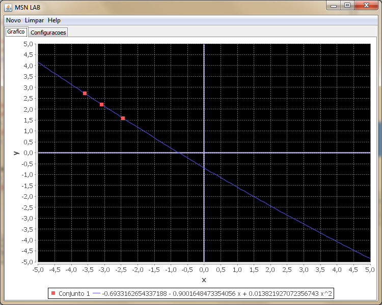
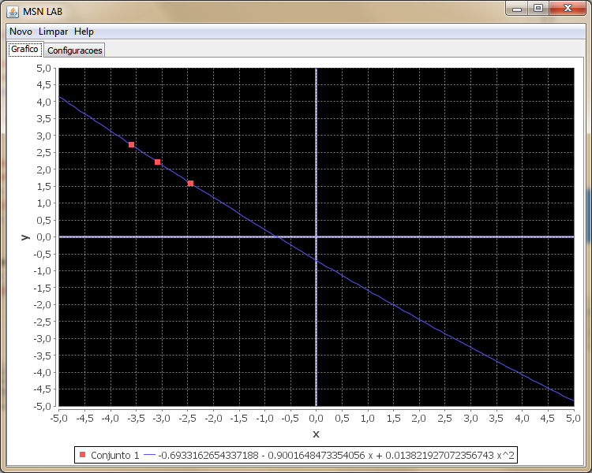

Estabeleça um conjunto de pontos na aba de Configurações.

Clique em Novo -> Interpolação -> Aproximação Polinomial -> Método de Newton

O resultado será exposto no gráfico como podemos ver na imagem a seguir:

o método de Newton (ou método de Newton-Raphson) tem o objetivo de estimar as raízes de uma função. Para isso, toma-se um ponto qualquer da função, calcula-se a equação da tangente (derivada) da função nesse ponto, calcula-se o intercepto da tangente ao eixo das abcissas, calcula-se o valor da função nesse ponto, e repete-se o processo, que deve tender a uma das raízes da função rapidamente, ou não tender a nada, deixando isso claro logo.
Para utilizar esta transfomada no MSN LAB siga as instruções abaixo.
Estabeleça um conjunto de pontos na aba de Configurações.
Clique em Novo -> Interpolação -> Aproximação Polinomial -> Método de Newton
O resultado será exposto no gráfico como podemos ver na imagem a seguir:
